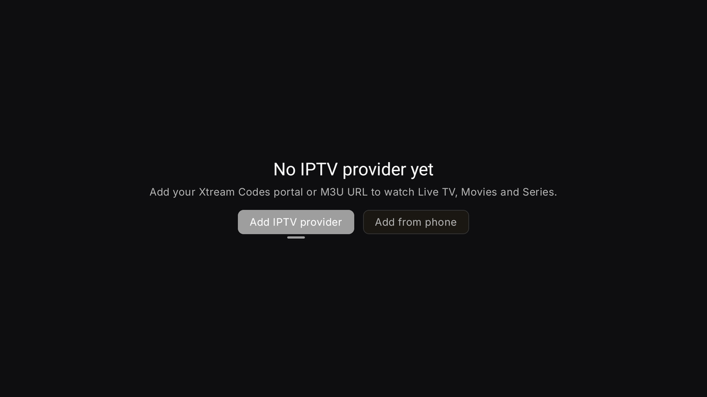
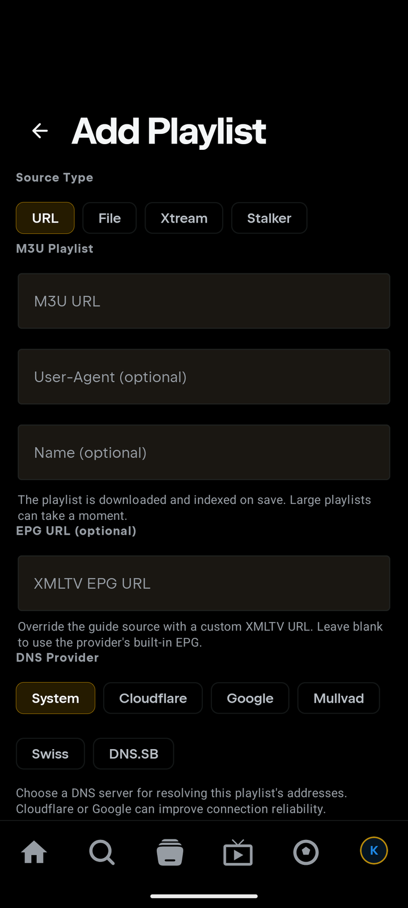

📄 Add an M3U playlist
Use this if your provider gave you a playlist link (often ending in get.php?…&type=m3u_plus or .m3u) or you have a playlist file (.m3u / .m3u8, optionally .gz).
Open the add screen
📱 Phone
- Tap the IPTV tab. First time? Tap Add IPTV provider. (Or: profile avatar → Settings → Integrations → IPTV (Xtream Codes) → Add Playlist.)
- At the top, set Source Type to URL — or File for a local file.
📺 TV
- Open IPTV in the left sidebar and choose Add IPTV provider.
- Set Source Type to URL (or File).

💡 Hate typing with the remote? Choose Add from phone instead — scan the QR with your phone and enter the playlist there. It appears on the TV automatically.
Option A — playlist URL
- M3U URL — paste the full link from your provider, e.g.
http://host:port/get.php?username=…&password=…&type=m3u_plusor…/playlist.m3u. - User-Agent (optional) — leave empty unless your provider requires a specific player string (e.g.
VLC/3.0.20 LibVLC/3.0.20). - Name (optional) — anything you like, e.g. "Living room".
- Press Add Playlist. Tuvora downloads and indexes the whole list once so browsing is fast — large playlists can take a moment.

Option B — playlist file
- Set Source Type to File and tap Choose file; pick your
.m3u/.m3u8(or.gz) file. - Optionally name it, then Add Playlist.
- The file is copied into the app — you can move or delete the original afterwards.
- File contents don't sync between devices (URLs do). On a TV with no file picker you'll see: "No file picker on this device — add the file by URL or from your phone (it syncs)."
Troubleshooting
- Empty after adding? Big lists index in the background — give it a minute, then reopen IPTV.
- Error on save? Test the same URL in VLC. If it fails there too, the link or your subscription is the problem — contact your provider.
- Works in VLC but not Tuvora? Some providers lock playback to a player string — set User-Agent to the one they expect and save again.
- Guide/EPG missing? Many M3U links pair with a separate EPG URL from your provider — check the playlist's settings after adding.
- Still stuck? Open a "Playlist / source won't work" report.
🔒 Your playlist URL usually contains your username and password. Never post it publicly — blur or replace it with
http://REDACTED:8080/… in screenshots and bug reports.